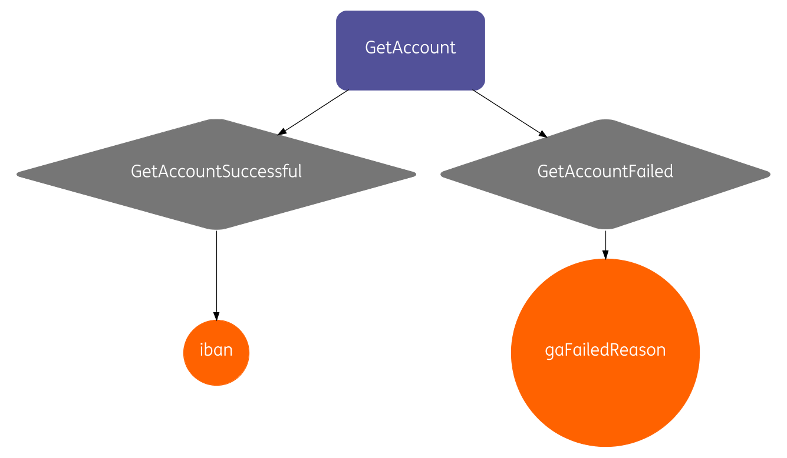

Declare, verify and execute microservices-based process flows with Baker
http://github.com/nikolakasev | ING


Symptoms of a Failing Restaurant


Symptoms of a Failing (Microservices) Architecture

Afraid to change the application code

Functionality breaks unexpectedly

Slow time to market
How to turn this around?


Simplify
Domain Specific Language for orchestration flows
Declarative
Easy to change
Reuse
Recipes
Interactions
Ingredients
Events
Communicate
Visualize your code
Non-IT understand as well
Reason About Comfortably
Design-time
```[.highlight: 1,6,7] public interface RegisterIndividual extends Interaction { @FiresEvent(oneOf = {RegisterIndividualSuccessful.class, RegisterIndividualFailed.class}) RegisterIndividualOutcome apply( @ProcessId String processId, @RequiresIngredient("name") String name, @RequiresIngredient("address") String address ); }
---
```[.highlight: 2,3]
public interface RegisterIndividual extends Interaction {
@FiresEvent(oneOf = {RegisterIndividualSuccessful.class,
RegisterIndividualFailed.class})
RegisterIndividualOutcome apply(
@ProcessId String processId,
@RequiresIngredient("name") String name,
@RequiresIngredient("address") String address
);
}



```java, [.highlight: 3-6] public Recipe get(){ return new Recipe("MuConf2017Demo"). withInteractions( of(AssignAccount.class), of(GetAccount.class), of(RegisterIndividual.class)); }
---

---
```java, [.highlight: 5, 7-9]
return new Recipe("MuConf2017Demo").
withInteractions(
of(AssignAccount.class),
of(GetAccount.class).
withRequiredEvent(TermsAndConditionsAccepted.class),
of(RegisterIndividual.class)).
withSensoryEvents(
TermsAndConditionsAccepted.class,
IndividualInformationSubmitted.class);
}

Run-time
```java, [.highlight: 2,4,5,8,9,13] //for each process instance, bake the recipe baker.bake(processId); //notify Baker when events occur baker.processEvent(processId, new SensoryEvents.IndividualInformationSubmitted(name, address)); baker.processEvent(processId, new SensoryEvents.TermsAndConditionsAccepted());
//retrieve ingredients stored in the accumulated state assert(baker.getIngredients(processId).get("customerId").equals(customerId)); assert(baker.getIngredients(processId).get("iban").equals(iban));
//retrieve all events that have occurred
Set

Under the Hood
Why Scala?
- Best fit for developing DSLs^1 on the JVM
- Compile-time recipe validation
- Type safety
Why Akka?
- Event Sourcing^2 (events can be replayed)
- Persistent actors (with Cassandra)
- Distributed actors across machines (with cluster sharding)
Why Petri net?^3


Best Practices
Short-lived vs. long-running flows
State is taken care of:
- Cassandra for persistent storage
- Ingredients encrypted by default
- State recovered automatically
Run Baker inside of your API
"Smart endpoints and dumb pipes"
When failure occurs:
- Baker retries technical failures with exponential backoff
- Works well with idempotent services
- Deal with functional failure in your recipe
Baker Capability Matrix:
- Investigate not one, not two, but all business processes in your company
- Where do you see re-use?
- Map using MoSCoW^4 to give importance (M = 10, S = 5, C = 2, W = 1)
| Checking Account | Savings Account | Customer Onboarding |
|---|---|---|
| Verify Identity | Verify Identity | Verify Identity |
| Register Individual | Register Individual | Register Individual |
| Open Checking Account | Open Savings Account | n/a |
| Issue Debit Card | n/a |
n/a |
| Send Message | Send Message | Send Message |
| Register Product Owner | Register Product Owner | n/a |

https://github.com/ing-bank/baker

Speed of change matters to anyone building software. Many engineering teams have identified Microservices as an important component of this architectural approach to designing more flexible systems that can meet the needs of their fast changing businesses. Applying this approach however, is hard. And ideas and practices are still very much evolving. To help with that, we've launched muCon - a conference to learn about emerging technologies and approaches, share challenges and evolve practices and ideas.
Their applications are built on top of microservices. If there careful enough their application serve bad meals.
If we are building microservices or a monolith or any type of service in general we are serving business logic to our clients. So no matter what we can not escape the architectural discussion. If we are not careful of how we architect our applications we end up serving bad meals.
I love cooking food and for the rest of the talk I'll be using analogies from there. It's very similar to our industry: long hours, hard work, and delivering experiences to our customers.
Have you been woken up at 3 o'clock in the morning on a Saturday morning after a night of partying, having to go to the war room and resolve an application incident. I've been there. When I remember the cold of the airconditioners, it still makes me shiver.
If we are building microservices or a monolith or any type of application in general we are serving business logic to our clients. So no matter what, we cannot escape the architectural discussion. If we are not careful of how we architect our applications we end up serving a bad meal to our clients.